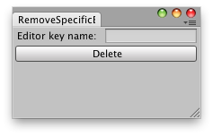

EditorPrefs.DeleteKey
public static void DeleteKey(string key);
Description 描述
Removes key and its corresponding value from the preferences.

Removes a user entered editor preference, if it doesnt exists it prints a message.
// Removes a user entered editor preference. // If it does not exists it prints a message.
using UnityEngine; using UnityEditor;
public class DeleteKeyExample : EditorWindow { string editorPref = "";
[MenuItem("Examples/EditorPrefs/Clear Key Preference")] static void Init() { DeleteKeyExample window = GetWindowWithRect<DeleteKeyExample>(new Rect(0, 0, 250, 50)); window.Show(); }
void OnGUI() { editorPref = EditorGUILayout.TextField("Editor key name:", editorPref); if (GUILayout.Button("Delete")) if (EditorPrefs.HasKey(editorPref)) { if (EditorUtility.DisplayDialog("Removing " + editorPref + "?", "Are you sure you want to " + "delete the editor key " + editorPref + "?, This action cant be undone", "Yes", "No")) EditorPrefs.DeleteKey(editorPref); } else { EditorUtility.DisplayDialog("Could not find " + editorPref, "Seems that " + editorPref + " does not exists or it has been deleted already, " + "check that you have typed correctly the name of the key.", "Ok"); } } }